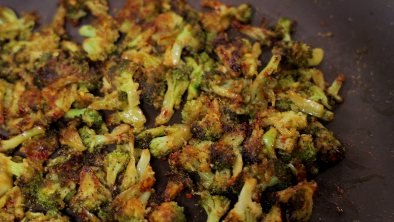

Magic Broccoli

Magic Broccoli is a delicious side-dish made by roasting broccoli with a bunch of garlic!
Recipe featured in: Cooking With Evan and Katelyn
Ingredients
- 2 full stalks of Broccoli
- 2 tbsp. minced Garlic
- Salt
- Pepper
- Red Pepper Flakes
- Olive Oil
Steps
- Heat olive oil in a skillet on medium high heat.
- Add broccoli.
- Season with salt, pepper, and red pepper flakes
- When broccoli has softened, add garlic. Stir frequently to avoid burning
- Cook to desired crispiness and plate